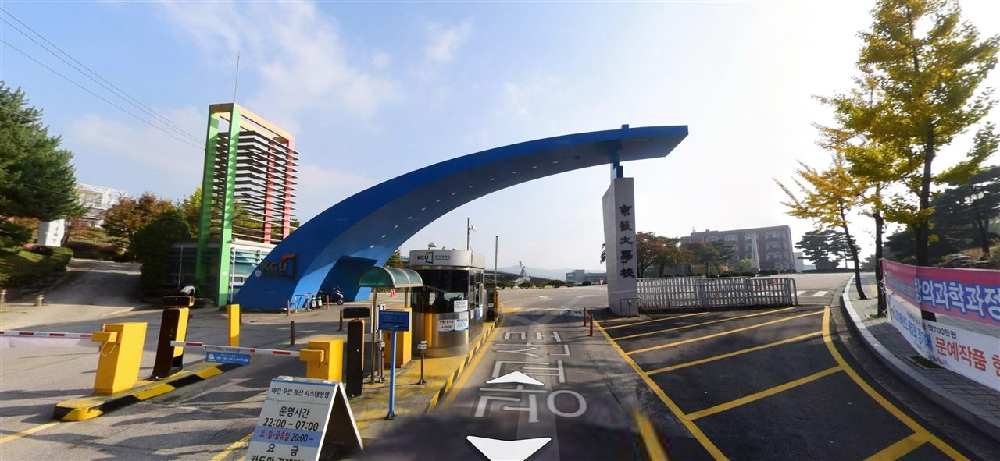

경기대학교(경기대)는 수원과 서울 두 곳에 캠퍼스를 둔 사립 종합대학입니다. 본교는 수원시 영통구에 있고, 서울캠퍼스는 서대문구에 있습니다. 경기 남부는 물론 서울 서북권과 경기 북부에서도 통학권에 드는 대학이라, 저희 센터 학부모님들께서 자주 물어보시는 곳이기도 합니다.
2027학년도 경기대는 전체 모집인원 3,000명대 가운데 약 68%인 2,114명을 수시로 뽑았습니다. 원서접수는 9월 7일부터 11일 오후 5시까지였고, 이미 마감됐습니다. 보도에 따르면 정원 내 1,975명 모집에 3만 3천여 명이 지원해 최종 경쟁률 17.02대 1을 기록했습니다. 지난해 16.2대 1보다 오른 수치입니다.
올해 경기대를 한 문장으로 요약하면 이렇습니다. "수능최저가 걸린 전형은 학생부교과 한 갈래뿐이고, 나머지는 서류·면접·논술로 갈린다." 수능 성적이 아직 불안한 학생에게 문이 넓은 구조라는 뜻이고, 동시에 경쟁률이 높아지는 이유이기도 합니다. 하나씩 살펴보겠습니다.
① 수능최저 — 딱 하나, 교과성적우수자전형에만
경기대 수시에서 수능최저학력기준이 적용되는 전형은 학생부교과 교과성적우수자전형 하나입니다. 기준은 이렇습니다.
- 국어·수학·영어·탐구(상위 1개 과목만 반영) 중 상위 2개 영역 등급의 합이 7 이내
- 한국사는 6등급 이내이며, 응시가 필수입니다
'2개 합 7'은 부담이 큰 기준은 아닙니다. 예를 들어 3등급과 4등급을 받으면 충족됩니다. 다만 두 가지를 주의하셔야 합니다. 첫째, 탐구는 상위 1개 과목만 반영됩니다. 두 과목을 고르게 만드는 것보다, 자신 있는 한 과목을 확실히 끌어올리는 쪽이 이 기준에는 유리합니다. 둘째, 한국사 6등급 이내는 놓치기 쉬운 조건입니다. 수능 당일 마지막 교시라고 흘려보냈다가 최저를 못 맞추는 사례가 해마다 나옵니다.
반대로 말하면 학교장추천전형, 학생부종합 전 전형, 논술전형에는 수능최저가 없습니다. 수능 없이 합격이 결정되는 길이 대부분이라는 뜻입니다. 이 점이 경기대 수시의 성격을 거의 결정합니다.
② 학생부교과 — 성적 90%에 출결 10%, 단순한 대신 정직합니다
학생부교과에서는 교과성적우수자전형 260명대와 학교장추천전형 310명대를 뽑았습니다. 여기에 정원 외로 농어촌학생 80명대, 기초생활수급자등 40명대가 있습니다.
반영 방식은 모든 세부전형이 같습니다. 학생부 교과성적 90% + 출결 10%입니다. 서류도 면접도 없습니다. 다른 대학처럼 서류 정성평가가 섞여 있지 않아 예측이 비교적 쉬운 대신, 내신 등급이 그대로 결과가 되는 구조입니다.
여기서 눈여겨볼 것은 출결 10%입니다. 비중이 작아 보이지만, 교과 성적이 촘촘하게 몰려 있는 구간에서는 미인정 결석 몇 번이 순위를 바꿀 수 있습니다. 고1·고2 학부모님께서 지금 챙기실 수 있는 가장 확실한 항목이기도 합니다. 성적은 하루아침에 올리기 어렵지만 출결은 관리로 지킬 수 있습니다.
또 하나. 학교장추천전형은 고교별 추천 인원이 정해진 전형입니다. 지원을 염두에 두신다면 3학년 1학기 성적이 나온 뒤가 아니라, 그 전에 담임선생님과 교내 추천 기준·절차를 미리 확인해 두셔야 합니다. 대학 요강만 봐서는 알 수 없고 학교마다 운영 방식이 다릅니다.
③ 학생부종합 — 수시 최대 규모, KGU학생부종합 678명
경기대 수시에서 가장 큰 덩어리는 학생부종합입니다. KGU학생부종합전형 678명을 중심으로, SW우수자전형 10명대, 기회균형선발 200명대, 사회배려대상자전형 30명대, 특수교육대상자전형 등으로 나뉩니다.
KGU학생부종합전형과 SW우수자전형은 단계별 전형입니다.
- 1단계 — 서류평가 100%로 모집인원의 3배수 선발
- 2단계 — 1단계 성적 70% + 면접 30%
1단계가 3배수라는 점을 꼭 보셔야 합니다. 1단계를 10배수, 20배수로 넓게 열어 두는 대학들과 비교하면 3배수는 좁습니다. 서류에서 걸러지는 폭이 크다는 뜻이고, 결국 학생부의 내용이 1차 관문을 통과할 수 있을 만큼 갖춰져 있어야 면접장에 들어갈 기회가 생깁니다.
대신 일단 1단계를 통과하면 면접 30%가 기다립니다. 3배수 안에서 30%를 걸고 겨루는 구조라면, 면접에서 순위가 뒤집히는 일이 드물지 않습니다. 서류로 들어가서 면접으로 결정되는 전형이라고 이해하시면 크게 틀리지 않습니다.
면접 준비의 핵심은 화려한 말솜씨가 아닙니다. 자기 학생부에 적힌 내용을 자기 입으로 설명할 수 있는가입니다. 2학년 때 했던 탐구의 동기가 무엇이었는지, 그 활동에서 실제로 무엇이 막혔고 어떻게 해결했는지 — 기록에 있는데 말로 못 하면 그 기록은 평가에서 힘을 잃습니다.
④ 논술 239명 — 수능최저가 없어서 경쟁률이 높습니다
경기대 논술전형은 239명을 뽑았습니다. 반영 비율은 논술고사 90% + 학생부교과 10%이고, 수능최저학력기준이 없습니다.
이 조합은 수험생 입장에서 매력적입니다. 내신 비중이 10%뿐이라 교과 성적이 아쉬워도 논술 한 번으로 승부를 걸 수 있고, 수능최저가 없으니 수능 성적과 무관하게 합격이 확정됩니다. 그만큼 사람이 몰립니다. 실제로 이번 수시에서 예체능을 제외한 모집단위 중 최고 경쟁률은 논술 자유전공학부(수원) 언어사회의 54.85대 1이었습니다.
경쟁률 50대 1이라는 숫자에 겁먹으실 필요는 없지만, 성격은 알고 계셔야 합니다. 수능최저가 없는 논술은 지원자 전원이 실제로 시험장에 나타나는 전형입니다. 수능최저가 걸린 대학의 논술은 최저 미충족으로 상당수가 걸러지면서 실질 경쟁률이 크게 낮아지지만, 여기서는 그 감소가 거의 없습니다. 표면 경쟁률이 곧 실제 경쟁률에 가깝습니다.
따라서 논술을 쓰신다면 '밑져야 본전'이 아니라 준비한 사람이 가는 자리로 보셔야 합니다. 출제 유형과 고사 일정은 모집단위마다 다르니, 반드시 입학처가 공개하는 선행학습영향평가 보고서의 기출문제와 모범답안을 직접 보고 판단하시기 바랍니다.
⑤ 올해 달라진 것 — 자유전공학부 239명, 로봇공학전공 신설
모집단위 쪽에서도 변화가 있었습니다.
- 자유전공학부 — 수원캠퍼스에서 언어사회 93명·수리 92명으로 185명, 서울캠퍼스에서 언어사회 41명·수리 13명으로 54명, 합쳐서 239명을 모집했습니다. 전공을 정하지 않고 입학해 탐색 후 선택하는 구조로, 최근 여러 대학이 늘리고 있는 방향입니다.
- 전자공학부 — 기존 나노·반도체전공, 정보통신시스템전공에 로봇공학전공이 새로 생겼습니다.
- 체육실기우수자전형 신설(30명대), 특성화고SW우수자전형 폐지
- 학부·학과 명칭 변경 — 디자인학부, 사회복지·청소년학과 등
자유전공학부를 고민하신다면 한 가지만 짚어 두겠습니다. 전공을 나중에 고를 수 있다는 것은 장점이지만, 인기 전공으로 배정받는 기준은 대체로 대학 입학 후의 성적입니다. "일단 들어가서 정하자"는 마음으로 지원하면 1학년 때 다시 경쟁이 시작됩니다. 학교 안에서 어떤 전공으로 갈 수 있고 배정 기준이 무엇인지는 입학 전에 확인해 두시는 편이 좋습니다.
⑥ 수원·서울 두 캠퍼스, 고사는 수원에서
경기대는 수원캠퍼스와 서울캠퍼스에서 함께 신입생을 모집합니다. 지원할 때 모집단위가 어느 캠퍼스 소속인지 반드시 확인하셔야 합니다. 같은 이름의 학부가 두 캠퍼스에 모두 있는 경우가 있고, 통학 거리와 캠퍼스 환경이 전혀 다릅니다.
한편 보도에 따르면 면접·논술 등 모든 고사는 수원캠퍼스에서 실시합니다. 서울캠퍼스 모집단위에 지원했더라도 시험을 보러 가는 곳은 수원이라는 뜻입니다. 고사 당일 이동 시간을 잘못 계산해 지각하는 일이 없도록, 정확한 고사 장소와 시간은 수험표와 입학처 공지로 다시 확인하시기 바랍니다.
⑦ 학년별로 지금 챙길 것
- 고3 — 이미 원서는 마감됐습니다. 학생부종합에 썼다면 1단계 발표를 기다리는 동안 자기 학생부를 처음부터 다시 읽고 예상 질문을 뽑아 두세요. 교과성적우수자전형에 썼다면 남은 일은 수능최저입니다. 탐구 상위 1과목과 한국사 6등급을 확실히 하는 것이 최우선입니다.
- 고2 — 종합전형을 생각한다면 1단계 3배수라는 문턱을 기억하세요. 활동 개수를 늘리는 것보다 한 방향으로 이어지는 기록이 서류에서 힘을 냅니다. 교과전형이라면 지금부터 출결을 지키십시오. 나중에 되돌릴 수 없는 항목입니다.
- 고1 — 경기대처럼 수능최저 부담이 낮은 대학은 내신과 학교생활 기록이 곧 결과가 됩니다. 1학년 성적이 3년 내신에 그대로 쌓인다는 점을 지금 아셔야 합니다.
- 중학생 — 고등학교 내신은 중학교 때 잡아 둔 공부 습관 위에서 결정됩니다. 특히 수학은 중학교에서 비어 있는 단원이 고1 첫 시험에서 바로 드러납니다.
와와 학습코칭센터에서는 아이의 내신과 과목별 상태를 진단해, 목표 대학·전형의 기준에 맞춰 지금 무엇부터 채워야 할지 함께 정리해 드립니다. 가까운 센터에서 무료 상담을 받아 보실 수 있습니다.
※ 본 글의 모집규모·전형 구성·반영비율·경쟁률은 경기대학교의 2027학년도 수시모집 관련 언론 보도를 바탕으로 정리했으며, 일부 인원 수치는 이해를 돕기 위해 범위로 표기했습니다. 학생부교과의 반영 교과와 학년별 반영 비율, 학생부종합 서류평가의 항목별 배점, 논술 출제 유형과 고사일, 면접 형식과 합격자 발표 일정은 확인하지 못해 이 글에 담지 않았습니다. 또한 자유전공학부의 전공 배정 기준, 학교장추천전형의 고교별 추천 인원 규정, 정원 외 전형의 지원 자격 세부 사항도 확정 표기하지 않았습니다. 사진은 과거에 촬영된 것으로 현재 모습과 다를 수 있습니다. 반드시 경기대학교 입학처의 2027학년도 수시모집요강 원문에서 본인 지원 모집단위 기준으로 최종 확인하시기 바랍니다.